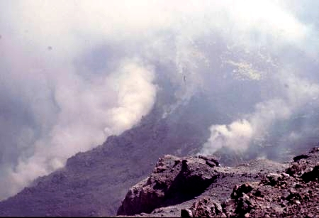

El
misterio del Láscar
El
misterio del Láscar
| Autor: Iván Aarón |
"Cuando hablamos de una obra literaria, estamos hablando
del lenguaje, de la palabra, de esa maravilla que ha perdurado a través
de los siglos para llegar hasta nosotros, y que sobrevive
y trasciende a los que la utilizan, a través de los años, de los
siglos y aún de los milenios.
Y fue la palabra: “tren” la que nos cuenta Iván Aarón
dio impulso a “El misterio del Láscar”.
Escribir un relato, una historia, es una hermosa experiencia para un escritor,
pues la narración es uno de los cauces naturales de la comunicación
humana.
Y así lo entiende Iván Aarón, que apoyado en el lenguaje
diario y actual de los chilenos nos transporta de regreso a través de
los siglos hasta el origen mismo de esta América que continúa
conservando sus misterios..."(1)
Fuente: http://www.deyave.com/FRV/volcanes/2005.htm |
"... las cumbres de las montañas mostraban manchones de nieve y grandes zonas de frío color oscuro, entibiadas por la luz del sol, que se asomaba presuroso. Algunas fumarolas se elevaban, aquí y allá, en los volcanes activos. Sólo el Lascar se mantenía dormido. Con el aliento controlado, el esbelto chasqui comenzó a trotar de nuevo y orientó sus pasos hacia el lejano -ayllo-, el pequeño poblado..." " una alta columna de humo claro comenzó a elevarse desde la cima del volcán Lascar. Tal como antecede a la tempestad, la oscuridad llenó los cielos. Un fuerte viento elevó las arenas del desierto, haciendo casi imposible la visibilidad. El grupo de aymarás contemplaba el espectáculo, que se presentaba en tan magnífico panorama, con la serenidad de quienes están habituados a tal cosa. El viento decreció. En el costado occidental del Lascar se comenzó a insinuar una fumarola, nueva y persistente. Una leve separación se produjo sobre las laderas cubiertas de yareta, la que pocos minutos más tarde ardió en llamas azulosas. La naciente magulladura telúrica se convirtió en pocos minutos en una profunda y ancha herida, por la que asomó un chispear vivísimo. Largas lenguas de fuego fueron a buscar las celestes alturas. Una lava exuberante, de olores sulfurosos, vertió ladera abajo. Los ardientes líquidos volcánicos, lentos pero inexorables, fueron pasando por entre las callejuelas del ayllo abandonado y se adentraron en la oquedad de las casas de barro."...(párrafos de"El misterio del Láscar") |
"Y surge nuevamente el historiador a través
de la trama que con tanta habilidad desarrolla.
Introduce el tema histórico con proverbial sutileza, con la intervención
de personajes y circunstancias claramente contemporáneas, sin perder
de vista su objetivo central, donde las joyas
de los aymarás terminarán cumpliendo su destino ancestral.
Encara el desafío de enfrentar dos épocas y dos historias tan
distintas; con la habilidad de un escritor experimentado, consiguiendo que el
lector recorra, sin sobresaltos ni dudas, un camino
que a través de modernas carreteras lo conducirá hacia las pinturas
murales de los camélidos que el autor contempló en Antofagasta.
Desde el comienzo de “El Misterio del Láscar” los personajes
creado por el autor, tienen una sencillez y naturalidad que los hacen humanos
y creíbles, con una vida intensa y una autenticidad
que asombra, van apareciendo como representantes de distintos sectores sociales
que se complementan pero que, a pesar de aparecer como asociados para un mismo,
fin conservarán a través
de todo el relato una identidad definida y personal. Sus hombres de negocios,
sus técnicos, sus empleados, y todos los que ingresan en la trama de
la novela no sólo se conducen y hablan
como tales, sino que aparecen con pensamientos y personalidades que los hacen
reales.
Iván Aarón se conduce con clara autoridad sobre todos los temas
que surgen de la narración. Un tema sucede a otro, los negocios, la descripción
precisa de un paisaje que conoce en
profundidad, las variantes de las modas, los sucios negocios que también
han llegado a nuestra América, y la vida marginal de los que incrementan
sus patrimonios con inversiones que
producen fortunas que deben blanquearse al margen de las leyes.
Demuestra el autor, nuevamente, una gran capacidad de trabajo. Maneja con maestría
el fluir temporal de la historia. Lo ha hecho a través de sus anteriores
novelas demostrando
un trabajo de investigación profundo, cuyos resultados quedan a la vista
a través de sus lecturas.
Queda finalmente la impresión de que la historia que en esta novela nos
ofrece Iván Aarón, no es una historia inventada, sino el reflejo
de una serie de acontecimientos que parece
transformarse en una realidad que el autor conduce con brillantez hacia un final
imprevisto para el lector pero absolutamente congruente con una tradicional
historia de su tierra que bien
merecería ser real.
No podría utilizar una sola palabra para describir la sensación
que me produjo la lectura de este libro, lo que había comenzado para
mi como una historia simple, se fue transformando
en una trama misteriosa y complicada, hasta arribar a un final cuya profundidad
no parecía previsible, y me enfrentó con una misteriosa leyenda
que la fantasía de la literatura pareció
transformar en realidad.
Al finalizar la lectura, recordé la frase de Jorge Luis Borges: “El
arte sucede”.
Y porque ha sucedido, aquí está este libro, que encontrará
a los lectores que tal vez sin saberlo, estaban esperando su llegada.
Luis Edgardo Soulé
La Plata"(1)
"Cayendo en pedazos, el avión fue sembrando
sus partes hacia el medio del salar. La cabina estalló en decenas
de trozos que se esparcieron sobre las aguas salobres. Un bolso de cuero,
repleto de joyas de oro atacameño, salió de los restos
de la cabina del avión, cayó sobre las aguas y se fue
hundiendo, lentamente. La serenidad volvió a reinar sobre el
poco profundo lago salobre. EL BELLOTO NORTE, QUILPUE, AGOSTO DE 1999".(párrafos de"El misterio del Láscar") |
 Fuente: www.escalando.cl/lascar.htm |
(1) Prólogo de la obra a cargo de
Luis Edgardo Soulé de La Plata (Argentina)
IMPRENTA PORTALES, Vega 676, Valparaíso, CHILE, Fono fax 22498101
E Mail imprentaportales@vtr.net
Es propiedad, DERECHOS EXCLUSIVOS, IVAN AARON, Santiago
de Chile 2007, Inscripción N º 165. 629
Musicalización: divineearth_jrobson.mid